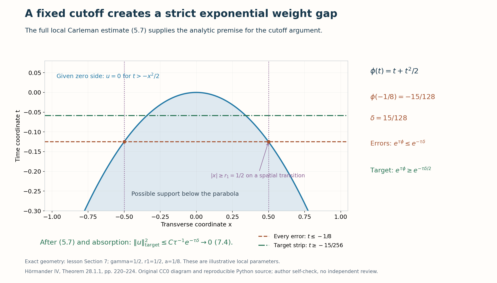

Simple characteristic roots and local Cauchy uniqueness
A polynomial in the normal frequency can split into real transport factors and complex elliptic factors. The estimates for those factors become a uniqueness theorem only after three additional steps: recover all derivatives from the products with one factor omitted, localize the root labels in angular patches, and pass the estimate to the weak domain of the equation. This lesson supplies those steps and the final cutoff argument.
We use the finite ordinary transverse product, adjoint and mapping calculus (B6), (B8a), (B8b), (B26) in When a moving symbol scale controls an operator, at its declared entry prerequisites. The two factor estimates and their compact-time Schwartz domain are proved in Exponential weights for first-order Cauchy factors, Theorems 2.1–2.2 and Section 6. The order-one positivity used there retains its exact selected provider. We prove every receiving factorization, angular, weak-domain and support step below. The historical theorem is Calderón's theorem as formulated by Hörmander [H, Theorem 28.1.1, pp. 220–224].
1. The exceptional conormals and the theorem
Let \(X\subset\mathbb R^n\) be open, let \(m\geq1\), and set
\[ P=p(z,D)=\sum_{|\alpha|=m}a_\alpha(z)D^\alpha,\qquad p(z,\xi)=\sum_{|\alpha|=m}a_\alpha(z)\xi^\alpha,\qquad D=-i\partial . \tag{1.1} \]The coefficients may be complex. Assume they are smooth and that the real characteristic set
\[ Z=\{(z,\xi)\in T^*X\setminus0:p(z,\xi)=0\} \tag{1.2} \]is a smooth hypersurface; an empty characteristic set is allowed. This is a hypothesis on a real subset of the real cotangent bundle, even when \(p\) is complex.
Define the exceptional conic set
\[ \begin{split} \Sigma=\{(z,N)\in T^*X\setminus0:\;& \text{for some }\xi\in\mathbb R^n,\ \tau\mapsto p(z,\xi+\tau N)\\ &\text{has a repeated complex zero }\tau \text{ with }\xi+\tau N\ne0\}. \end{split} \tag{1.3} \]An identically zero polynomial meets the repeated-zero condition. The nonzero condition in (1.3) is essential: the homogeneous polynomial's zero at the zero covector is excluded.
For a closed set \(F\subset X\), its exterior support normals \(N_e(F)\) are the nonzero pairs \((z_0,d\psi(z_0))\) obtained from a real \(C^2\) function with
\[ z_0\in F,\qquad \psi(z)\leq\psi(z_0)\text{ on }F\text{ near }z_0,\qquad d\psi(z_0)\ne0 . \tag{1.4} \]Positive multiplication of a support function gives the corresponding positive conormal ray. Put \(N_i(F)=-N_e(F)\) and \(N(F)=N_e(F)\cup N_i(F)\); these are the interior and whole normal sets. Their closures are taken separately in the nonzero cotangent bundle. This is the convention of Hörmander I, Definition 8.5.7 and the notation on pp. 300–301 [HI].
The definition using smooth support functions gives the same exterior set. In local coordinates let \(T_2\psi\) be the quadratic Taylor polynomial at \(z_0\). Since \(\psi-T_2\psi=o(|z-z_0|^2)\), the smooth polynomial \(T_2\psi-|z-z_0|^2\) has the same differential and is at most \(\psi(z_0)\) on \(F\) near \(z_0\), after shrinking the neighborhood. Indeed the Taylor remainder there has modulus at most \(|z-z_0|^2/2\). Thus the proof may use a smooth support function without changing \(N_e(F)\).
Theorem 1.1 (simple-root Cauchy uniqueness). Suppose (1.1)–(1.2) hold. Let
\[ \begin{gathered} u\in H^{m-1}_{\mathrm{loc}}(X),\qquad Pu\in L^2_{\mathrm{loc}}(X),\\ |Pu|\leq C_K\sum_{|\alpha|<m}|D^\alpha u|\\ \text{almost everywhere on each compact }K\subset X. \end{gathered} \tag{1.5} \]Then \(\overline{N(\operatorname{supp}u)}\subset\Sigma\), where closure is taken in \(T^*X\setminus0\). In particular, \(u\) continues uniquely across every \(C^1\) surface whose conormal at the point lies outside \(\Sigma\).
The theorem includes a full lower-order differential equation: locally bounded coefficients in terms of order less than \(m\) imply (1.5). It does not assume ellipticity of \(p\). Its coefficient hypothesis here is smoothness. The source's separate comment about a Lipschitz coefficient relaxation requires a rough-coefficient factor calculus and is not asserted by this proof.
Lemma 1.2. The set \(\Sigma\) is closed in \(T^*X\setminus0\), is symmetric under conormal reversal, and contains \(Z\).
Proof. Replacing the normal parameter \(\tau\) by \(-\tau\) shows that \((z,N)\in\Sigma\) if and only if \((z,-N)\in\Sigma\). Both repeated-root multiplicity and the nonzero covector condition are unchanged, since \(\xi+\tau N=\xi+(-\tau)(-N)\). This also covers an identically zero polynomial.
If \(p(z,N)=0\), take \(\xi=N\). Homogeneity gives \(p(z,(1+\tau)N)=0\) identically, and \(\tau=0\) has nonzero covector \(N\). Thus \(Z\subset\Sigma\).
Consider a convergent sequence of exceptional pairs with limit \((z,N)\) and \(p(z,N)\ne0\). After subtracting the component of \(\xi\) parallel to \(N\), translate \(\tau\) accordingly. The remaining transverse component cannot be zero: if it were, the only zero of the nonzero polynomial \(p(z,N)(s+\tau)^m\) would give the excluded zero covector. Rescale that transverse component to length one, adjusting \(\tau\) by the same positive scale. The transverse unit vectors lie in a compact set. The leading coefficient \(p(z,N)\) stays bounded away from zero near the limit, and all other coefficients of the resulting degree-\(m\) polynomials are bounded. The elementary root bound obtained from \(|\tau|^m\leq C\sum_{j<m}|\tau|^j\) therefore bounds their repeated roots. Pass to a subsequence. At the limit both the polynomial and its \(\tau\) derivative vanish. The transverse unit vector is orthogonal to \(N\), so its sum with \(\tau N\) cannot be zero, even for complex \(\tau\). The limit is exceptional. Limits with \(p(z,N)=0\) are already covered by \(Z\subset\Sigma\). ∎
2. Local root branches, including the angular obstruction
Fix a point and a conormal outside \(\Sigma\). Since \(Z\subset\Sigma\), this conormal is noncharacteristic. Choose coordinates \((t,x)\in\mathbb R\times\mathbb R^d\), \(d=n-1\), so it is \(dt\) at the origin, and divide the principal polynomial by its nonzero time coefficient. Thus
\[ p(z,\sigma,\eta) =\sigma^m+\sum_{r=0}^{m-1}p_r(z,\eta)\sigma^r . \tag{2.1} \]For every \(\eta\ne0\), \(p(0,\sigma,\eta)\) has \(m\) simple complex roots. A repeated root would be precisely a witness for (1.3) with \(\xi=(0,\eta)\). On the transverse unit sphere their minimum separation is positive, because the roots as an unordered set depend continuously on the polynomial coefficients and the sphere is compact.
The complex implicit-function theorem supplies smooth individual root branches on angular neighborhoods. Their extension to general \(\eta\ne0\) by positive homogeneity has degree one. Choose finitely many relatively compact angular patches inside such neighborhoods, and shrink the base neighborhood once for all of them. On each enlarged patch we have
\[ p(z,\sigma,\eta)=\prod_{j=1}^m(\sigma-r_j(z,\eta)), \qquad |r_j-r_k|\geq c|\eta|\quad(j\ne k). \tag{2.2} \]Here and below the labels are local to the angular patch. There is no assumed global root labelling.
Lemma 2.1 (persistence of a real root). A branch which is real at one parameter point remains real near it. A nonreal branch on a sufficiently small closed angular and base patch has a fixed imaginary sign and satisfies \(|\operatorname{Im}r_j|\geq c_j|\eta|\).
Proof. At a real simple root, \(\partial_\sigma p\ne0\), so the real differential of the complex-valued \(p\) has rank at least one. It cannot have rank two: the real implicit-function theorem would then make its zero set have codimension two, contradicting (1.2). It has rank one, with kernel equal to the tangent space of \(Z\). The \(\sigma\) direction is outside that kernel. Projection of \(Z\) to the remaining base and frequency parameters is therefore a local diffeomorphism. Its graph supplies a real root in each nearby parameter fiber. Uniqueness of the simple complex-root branch identifies this real graph with that branch. For a nonreal branch, continuity preserves the sign. Compactness of the closed unit-frequency patch and homogeneity give its stated positive lower bound. ∎
We need global symbols to apply the factor estimates to noncompact transverse outputs. First extend each branch in the base by a smooth cutoff to its frozen value \(r_j(0,\eta)\). Shrink the cutoff's support until every extended branch remains within a small fixed multiple of \(|\eta|\) of its frozen branch. This preserves all root separations on the enlarged angular patch. It preserves reality for real branches and the imaginary sign and lower bound for nonreal branches.
Choose three nested angular regions, with closures contained successively inside one another. Frequency localizers are supported in the smallest region; interpolation cutoffs are supported in the middle region. Choose an angular cutoff equal to one throughout the middle region and supported in the largest root patch. For a nonreal branch with sign \(s_j\in\{-1,1\}\), extend it outside that patch by the convex formula
\[ \vartheta(\eta/|\eta|)\,\widetilde r_j(z,\eta) +(1-\vartheta(\eta/|\eta|))\,s_j i|\eta|. \tag{2.3} \]Both imaginary terms have the same sign and a uniform positive lower bound in modulus. For a real branch use zero in place of \(s_j i|\eta|\). Finally multiply by a smooth radial cutoff which is zero near \(\eta=0\) and one for \(|\eta|\geq2\). The resulting symbols \(a_j\) are globally in ordinary \(S^1\), uniformly with all base derivatives. A real symbol stays real. Every nonreal symbol satisfies the frozen-time ellipticity condition
\[ |\eta|\leq C\bigl(|\operatorname{Im}a_j(0,x,\eta)|+1\bigr). \tag{2.4} \]The constant term covers the bounded radial transition. Root separation is required only in the patch where the interpolation symbols will be defined, and there it is retained for every base point by the base extension.
Choose a fixed small scale \(\epsilon>0\), common to the finitely many complex-factor estimates, and put
\[ A_j(t)=\operatorname{Op}_x(a_j(\epsilon t,\epsilon x,\eta)), \qquad L_j=D_t-A_j . \tag{2.5} \]All later constants may depend on this fixed scale. On a fixed compact set \(K\Subset I\times\mathbb R^d\), \(I=(-1/2,1/2)\), chosen inside the region of agreement, the symbols equal the true roots of \(p(\epsilon z,\sigma,\eta)\) on their patch at high transverse frequency.
The preceding factor lesson supplies, for all sufficiently large \(\tau\), with \(W=e^{\tau\phi(t)}\), \(\phi=t+t^2/2\),
\[ \tau\|Wv\|_2^2\leq C\|WL_jv\|_2^2 . \tag{2.6} \]For real branches its stronger estimate has \(\tau^2\) on the left, which implies (2.6) since \(\tau\geq1\). Equation (2.6) applies to every compact-time Schwartz input, including the ordered omitted-factor outputs below.
3. Time-polynomial errors and the missing derivative powers
We record the operator class needed to keep weights out of the transverse calculus. For an integer \(q\geq0\), write
\[ R=\sum_{r=0}^q C_r(t,x,D_x)D_t^r,\qquad C_r\in\Psi^{q-r}_x , \tag{3.1} \]with full uniform transverse symbol bounds and time derivatives. Denote this class by \(\mathcal T_q\), and put \(\mathcal T_{-1}=\{0\}\). Its mapping estimate is
\[ \|WRu\|_2^2\leq C M_q(u),\qquad M_q(u)=\sum_{|\alpha|\leq q}\|WD^\alpha u\|_2^2 . \tag{3.2} \]Indeed \(W\) commutes exactly with each \(C_r(t)\). Apply the ordinary transverse \(H^{q-r}\)-to-\(L^2\) bound at each time to \(D_t^ru\), and integrate. The Sobolev norm of integer order \(q-r\) is bounded by the finite sum of transverse derivative norms of order at most \(q-r\). This proves (3.2). No time pseudodifferential weight estimate is being imported.
Every finite product of the \(L_j\) is a monic polynomial in \(D_t\). Moving \(D_t\) past a coefficient uses the exact identity \([D_t,C]=-i\partial_tC\); each such operation lowers its time degree by one. In each transverse product, the principal product is ordinary multiplication, and the full first remainder lowers transverse order by one. Consequently an ordered product of \(q\) factors has coefficient orders \(q-r\), leading coefficient one, and its full error from its principal polynomial is in \(\mathcal T_{q-1}\). This statement uses the full finite remainder bounds, rather than a formal infinite expansion.
The weight powers in the eventual estimate need only the scalar case \(a=0\) of the real-factor estimate:
\[ \tau^2\|Wf\|_2^2\leq16\|WD_tf\|_2^2 . \tag{3.3} \]Apply it successively to \(D^\alpha u,D_tD^\alpha u,\ldots\). For \(s\geq0\), define
\[ \begin{split} F_s(u)&=\sum_{|\alpha|\leq s} \tau^{2(s-|\alpha|)}\|WD^\alpha u\|_2^2,\\ S_s(u)&=\sum_{|\alpha|=s}\|WD^\alpha u\|_2^2. \end{split} \tag{3.4} \]Each term of \(F_s\) is bounded by \(16^{s-|\alpha|}\) times a term of \(S_s\). There are finitely many multiindices, so
\[ S_s\leq F_s\leq C_sS_s,\qquad M_s\leq F_s,\qquad M_{s-1}\leq\tau^{-2}F_s . \tag{3.5} \]For \(s=0\), interpret \(M_{-1}=0\). This is the reason top-order derivative reconstruction suffices.
4. Angular factorization with every localization error
Choose smooth nonnegative functions on the sphere, with support in the smaller root patches, summing to one. With a radial multiplier \(\rho=1\) near zero and supported in a fixed ball, form a finite Fourier partition
\[ \Theta_0=\rho(D_x),\qquad \Theta_\ell=\theta_\ell(D_x)\ (\ell\geq1),\qquad \rho(\eta)+\sum_{\ell\geq1}\theta_\ell(\eta)=1. \tag{4.1} \]The high-frequency \(\theta_\ell\) are supported where their patch's branches agree with the principal roots. Their transition near zero can be arranged outside the region where the roots were radially cut off. Each multiplier is bounded on every transverse Sobolev space and commutes with \(D_t,W\). Applied to a compact smooth \(u\), it gives a compact-time Schwartz function. Spatial compactness is not claimed.
For patch \(\ell\) and index \(k\), take any fixed order of the \(m-1\) remaining factors and set
\[ Q_{\ell k}=\prod_{j\ne k}L_{\ell j},\qquad F_{\ell k}=L_{\ell k}Q_{\ell k},\qquad P_\epsilon=p(\epsilon z,D). \tag{4.2} \]We claim, for \(u\) supported in \(K\),
\[ F_{\ell k}\Theta_\ell u =\Theta_\ell P_\epsilon u+E_{\ell k}u,\qquad E_{\ell k}\in\mathcal T_{m-1}. \tag{4.3} \]Here the operator on the right may include a fixed base cutoff equal to one on \(K\).
To prove this claim, extend the coefficients of \(P_\epsilon\) smoothly and with bounded derivatives, preserving its monic \(D_t^m\) coefficient exactly. Choose \(\psi=1\) near \(K\), supported in the base region of agreement, and use \(u=\psi u\). The two monic \(D_t^m\) terms in \(F_{\ell k}-P_\epsilon\) cancel identically, even outside the patch. Its time degrees are at most \(m-1\). For degree \(r\leq m-1\), its coefficient has transverse order \(m-r\), with leading homogeneous symbol zero on the local base and frequency patch. In the full symbol of \((F_{\ell k}-P_\epsilon)\Theta_\ell\psi\), the zero-derivative term vanishes at principal order because of this agreement. Each remaining spatial composition term has order at most \(m-r-1\); the full first remainder has that same bound. If a time derivative falls on \(\psi\), it lowers time degree and therefore total order by at least one. These are precisely the bounds of \(\mathcal T_{m-1}\). This argument also controls the spatial tails produced by \(\Theta_\ell\); it requires no support claim for their outputs.
The remaining difference is \([P_\epsilon,\Theta_\ell]\psi\). The monic highest time term commutes exactly. Each other coefficient's transverse commutator has its zero-derivative product cancelled, and its full remainder lowers transverse order by one. Thus this commutator is again in \(\mathcal T_{m-1}\). This proves (4.3) for each high-frequency patch. For \(\ell=0\), use any one collection of extended factors. Every coefficient multiplied by \(\rho\) has bounded frequency support and is of arbitrarily low transverse order; the identical cancellation of the \(D_t^m\) coefficient still bounds its time degree by \(m-1\). The same proof therefore gives (4.3) for the low-frequency piece.
Apply (2.6) with input \(Q_{\ell k}\Theta_\ell u\). Equation (4.3), (3.2), and the bounded multiplier \(\Theta_\ell\) give
\[ \tau\sum_{\ell,k}\|WQ_{\ell k}\Theta_\ell u\|_2^2 \leq C\bigl(\|WP_\epsilon u\|_2^2+M_{m-1}(u)\bigr). \tag{4.4} \]All factor orders are those of (4.2). The proof permits every such fixed order; reversing factors changes only errors already included in (4.3).
5. Cofactor interpolation and the full estimate
Put \(s=m-1\). On a high-frequency patch, the elementary Lagrange identity for the monic polynomial with distinct roots is
\[ \sigma^{\alpha_t}\eta^{\alpha_x} =\sum_{k=1}^m g_{\alpha k}(z,\eta) \prod_{j\ne k}(\sigma-a_j(\epsilon z,\eta)), \qquad |\alpha|=s, \tag{5.1} \]where
\[ g_{\alpha k} =\frac{\eta^{\alpha_x}a_k(\epsilon z,\eta)^{\alpha_t}} {\prod_{j\ne k}(a_k(\epsilon z,\eta)-a_j(\epsilon z,\eta))}. \tag{5.2} \]To verify (5.1), evaluate both polynomials at each of the \(m\) distinct roots. Their difference has degree at most \(m-1\) and has \(m\) zeros, so it is zero. Separation, homogeneity and quotient differentiation put the \(g_{\alpha k}\) in \(S^0\) on the enlarged patch. Comparing coefficients of \(\sigma^s\) gives
\[ \sum_k g_{\alpha k}=q_\alpha,\qquad q_\alpha= \begin{cases}1,&\alpha_t=s,\\0,&\alpha_t<s.\end{cases} \tag{5.3} \]Extend these symbols globally without spoiling this exact identity. Multiply the local formula by a frequency cutoff \(\zeta\) equal to one on the support of the high-frequency localizer and supported in the enlarged patch. Add \(q_\alpha(1-\zeta)\) to the first symbol. All symbols remain in \(S^0\), and (5.3) now holds at every frequency and base point.
Quantize (5.1) transversely and use the ordered cofactors in (4.2). The leading \(D_t^s\) coefficient cancels exactly by (5.3). For every other time degree, the leading transverse coefficient cancels on the patch by (5.1). Full finite product remainders lose one transverse order, and time coefficient differentiations lose one time degree. Since right composition with a Fourier multiplier multiplies a left symbol by its multiplier exactly, we obtain
\[ D^\alpha\Theta_\ell u =\sum_k G_{\ell,\alpha k}Q_{\ell k}\Theta_\ell u +R_{\ell,\alpha}u,\qquad R_{\ell,\alpha}\in\mathcal T_{s-1}. \tag{5.4} \]This formula holds globally in the output base variable: the extended roots retain their separation and the polynomial interpolation identity throughout that base on the enlarged angular patch. It therefore needs no cutoff of the noncompact output.
For the low-frequency localizer, take \(G_{0,\alpha1}=1\) when \(\alpha_t=s\), all other \(G=0\). In that case \(D_t^s-Q_{01}\) has time degree at most \(s-1\); after right multiplication by \(\rho\), all its transverse coefficients have arbitrarily low order. When \(\alpha_t<s\), \(D^\alpha\Theta_0\) itself has time degree at most \(s-1\) and bounded transverse frequency. Thus (5.4) holds for \(\ell=0\) too. When \(m=1\), \(s=0\), the cofactor is the identity and the remainder is exactly zero.
Sum (5.4) over the partition (4.1), and apply the uniform \(S^0\) bounds, which commute with the time weight. This gives
\[ S_s(u)\leq C\left( \sum_{\ell,k}\|WQ_{\ell k}\Theta_\ell u\|_2^2 +M_{s-1}(u)\right). \tag{5.5} \]Use (3.5), multiply by \(\tau\), and insert (4.4):
\[ \begin{split} \tau F_s(u) &\leq C\|WP_\epsilon u\|_2^2 +C M_s(u)+C\tau M_{s-1}(u)\\ &\leq C\|WP_\epsilon u\|_2^2 +(C+C/\tau)F_s(u). \end{split} \tag{5.6} \]Choose one fixed large threshold for \(\tau\) and absorb the last term. We have proved
\[ \boxed{\displaystyle \sum_{|\alpha|<m} \tau^{\,2(m-|\alpha|)-1} \|e^{\tau\phi}D^\alpha u\|_2^2 \leq C\|e^{\tau\phi}P_\epsilon u\|_2^2, \qquad u\in C_c^\infty(K^\circ).} \tag{5.7} \]The scale and support were fixed before \(\tau\). Constants are uniform for all \(\tau\) above the threshold. Formula (5.7) includes every derivative of order less than \(m\), all dimensions, all angular patches and the low-frequency piece.
If \(d=0\), the normalized principal operator is \(D_t^m\). Iterating (3.3) \(m-j\) times gives \(\tau^{2(m-j)}\|WD_t^ju\|^2\leq16^{m-j}\|WD_t^mu\|^2\). Multiply by \(\tau^{-1}\), sum over \(j<m\), and use \(\tau\geq1\). This proves (5.7) directly in dimension one, without an angular construction.
6. Passing to the weak graph domain
Lemma 6.1 (local graph approximation). Let \(P\) have smooth coefficients and order \(m\). If \(w\) is compactly supported in an interior set, \(w\in H^{m-1}\), and \(Pw\in L^2\), then smooth \(w_\delta\), supported in a fixed slightly larger interior set, can be chosen so that
\[ w_\delta\longrightarrow w\text{ in }H^{m-1},\qquad Pw_\delta\longrightarrow Pw\text{ in }L^2 . \tag{6.1} \]Proof. Extend the coefficients smoothly with bounded derivatives across that fixed compact neighborhood. Let \(J_\delta\) be convolution with a smooth compactly supported mollifier of radius \(O(\delta)\). Its Fourier multiplier \(\widehat j(\delta\xi)\) is uniformly in ordinary \(S^0\): Schwartz decay and the inequalities \(\delta^k(1+\delta|\xi|)^{-k}\leq C_k\langle\xi\rangle^{-k}\) bound every frequency derivative.
For multiplication by a smooth bounded coefficient \(a\), the zero-derivative products in \([a,J_\delta]\) cancel. The full first composition remainder is uniformly of order minus one. This is a full symbol bound from the selected ordinary calculus, with the preceding uniform multiplier seminorms; it is not an asymptotic equality. Composing with \(\langle D\rangle\) therefore gives a uniform order-zero \(L^2\) bound, equivalently \([a,J_\delta]:H^{-1}\to L^2\) uniformly. The exact finite expansion
\[ [P,J_\delta] =\sum_{|\alpha|\leq m}[a_\alpha,J_\delta]D^\alpha \tag{6.2} \]is consequently uniformly bounded from \(H^{m-1}\) to \(L^2\).
On a smooth compactly supported input, both terms of this commutator converge to their identity-mollifier limits in \(L^2\). Density and the uniform bound extend this strong convergence to every \(H^{m-1}\) input. Thus \(w_\delta=J_\delta w\) satisfies \(Pw_\delta=J_\delta Pw+[P,J_\delta]w\to Pw\), as well as \(w_\delta\to w\) in \(H^{m-1}\). Compact kernel support gives the common slightly enlarged support. ∎
Choose the support of \(w\) strictly inside the compact region allowed for (5.7). For each fixed \(\tau\), the weight and all needed derivatives are bounded there. Apply (5.7) to \(w_\delta\) and pass to the limit using (6.1). Thus (5.7) holds on this graph domain with the same constant and threshold. No uniform joint limit in \(\delta\tau\) is used.
7. The cutoff proves uniqueness
Proof of Theorem 1.1. It suffices to rule out a support normal outside \(\Sigma\). Suppose such a smooth supporting function \(\psi\) touches the support at the origin, with \(\psi(0)=0\) and \(u=0\) on \(\psi>0\) near zero. Choose transverse coordinates and a positive \(\gamma\), and use \(t=\psi-\gamma|x|^2\) as the remaining coordinate. Its differential at zero is \(d\psi\ne0\). The zero side becomes
\[ u=0\quad\text{for }t>-\gamma|x|^2 . \tag{7.1} \]Smooth coordinate changes preserve the real characteristic hypersurface and the exceptional conormal condition: the cotangent map is an invertible real linear map in each fiber and sends \(\xi+\tau N\) to the same affine expression in the new covectors. It preserves root multiplicity and nonzero covectors. The transformed differential operator consists of its transformed principal operator and terms of order less than \(m\). These lower terms are absorbed into (1.5). Local Sobolev membership, the \(L^2\) graph condition and the differential inequality are preserved by the smooth coordinate change and by division by the nonzero leading coefficient. A fixed small dilation gives the \(P_\epsilon\) of (5.7), adjusts the positive \(\gamma\), and changes only finite local lower-order constants. We now work in these fixed normalized coordinates.
Take a product cutoff \(\chi(t,x)=\chi_t(t)\chi_x(x)\). Let \(\chi_x=1\) for \(|x|<r_1\) and vanish for \(|x|>2r_1\). Let \(\chi_t=1\) on \([-a,b/2]\), with support in \((-2a,b)\), where \(a,b>0\) are small enough that the whole support lies inside the allowed slab and compact region. The upper time transition has \(t>0\), where \(u\) and all its weak derivatives vanish by (7.1). On the lower transition \(t\leq-a\). On a spatial transition where a derivative of \(u\) can be nonzero, (7.1) gives \(t\leq-\gamma r_1^2\).
Put
\[ b_0=\min(a,\gamma r_1^2),\qquad \delta=b_0-b_0^2/2>0 . \tag{7.2} \]Since \(\phi\) is increasing on the slab, every nonzero cutoff-error term lies where \(\phi\leq-\delta\). On the target strip \(t\geq-\delta/2\), we have \(\phi(t)\geq t\geq-\delta/2\).
Set \(w=\chi u\). The commutator \([P_\epsilon,\chi]\) is a differential operator of order at most \(m-1\). Hence \(w\in H^{m-1}\) and \(P_\epsilon w\in L^2\). The equation inequality and the finite Leibniz formula express \(\chi D^\alpha u\) as \(D^\alpha w\) plus terms containing a derivative of \(\chi\). All those additional terms have the same cutoff support just described. Their fixed local \(H^{m-1}\) norm is finite. Therefore
\[ \|WP_\epsilon w\|_2^2 \leq C_1\sum_{|\alpha|<m}\|WD^\alpha w\|_2^2 +C_2e^{-2\tau\delta}. \tag{7.3} \]Apply the graph-domain version of (5.7). Every power on its left is at least \(\tau\). Increase the fixed threshold to absorb the first term of (7.3). It follows that
\[ \tau\|Ww\|_2^2\leq C_3e^{-2\tau\delta},\qquad \|u\|_{L^2(\{|x|<r_1,\,-\delta/2<t<b/2\})}^2 \leq C_3\tau^{-1}e^{-\tau\delta}. \tag{7.4} \]Let \(\tau\) tend to infinity. The displayed open cylinder is a neighborhood of zero and its \(u\) norm is zero. This contradicts zero being in the support. Thus every exterior support normal lies in \(\Sigma\). Its symmetry from Lemma 1.2 puts all interior normals there as well. Its closedness then gives the asserted inclusion \(\overline{N(\operatorname{supp}u)}\subset\Sigma\) for the entire whole-normal closure.
For the \(C^1\) conclusion, straighten the tangent plane by a linear coordinate change. Write the given surface as \(t=f(x)\), with \(f(0)=0\), \(df(0)=0\), and suppose \(u\) vanishes above it. If zero still belongs to its support \(F\), take the point \(c_h=(h,0)\), \(h>0\), and a closest point \(z_h=(t_h,x_h)\) of the local closed \(F\). The point zero is available, so
\[ |x_h|^2+(h-t_h)^2\leq h^2,\qquad t_h\leq f(x_h)=o(|x_h|). \tag{7.5} \]For sufficiently small \(h\) the nearest point lies in the interior of the chosen local compact neighborhood. The first inequality gives \(t_h\geq0\) and \(|x_h|\leq2h\). Combining them gives \(|x_h|^2\leq2h\,o(|x_h|)\), so \(|x_h|=o(h)\) and \(t_h=o(h)\). The ball centered at \(c_h\) with radius \(|c_h-z_h|>0\) misses \(F\). Its smooth support function \(|c_h-z_h|^2-|z-c_h|^2\) has normal \(2(c_h-z_h)\) at \(z_h\). Its positive unit ray tends to \(dt\), and \(z_h\to0\). Since the original conormal is outside the closed \(\Sigma\), these support normals are outside \(\Sigma\) for small \(h\), contradicting the result just proved. This proves the \(C^1\) assertion without replacing a \(C^1\) surface by an unproved smooth supporting graph. ∎

Figure 1. Choose the illustrative parameters \(\gamma=1/2\), \(r_1=1/2\), \(a=1/8\). Then \(b_0=1/8\), \(\delta=15/128\), and \(\phi(-1/8)=-15/128\) exactly. The support and weight inequalities are (7.1)–(7.4); the full premise is proved in (5.7). These are fixed local example parameters, rather than universal theorem constants. The shaded region is possible support, not a displayed solution. Original CC0 diagram; reproducible Python source. Source theorem: Hörmander [H, pp. 220–224].
8. Examples and exercises with complete solutions
The wave polynomial \(p=\sigma^2-|\eta|^2\) has two simple real roots for \(\eta\ne0\), and its real characteristic set is smooth away from zero. Thus the time conormal is outside \(\Sigma\), and Theorem 1.1 applies. In one transverse dimension, the characteristic surface \(t+x=0\) does not permit this conclusion: any smooth nonzero function \(F\) supported on the negative half-line gives \(u(t,x)=F(t+x)\), with \((D_t^2-D_x^2)u=0\), vanishing on \(t+x>0\). Its conormal is characteristic and therefore belongs to \(\Sigma\). For example \(F(s)=e^{1/s}\) for \(s<0\), zero for \(s\geq0\), is smooth at zero.
A mixed example in one transverse dimension is \(p=\sigma(\sigma^2+\eta^2)\). Its roots \(0,i|\eta|,-i|\eta|\) are distinct for \(\eta\ne0\). Its real characteristic set is \(\sigma=0\) away from the zero covector, a smooth hypersurface. The proof uses one real factor and two complex elliptic factors, and yields local time uniqueness for the third-order operator under (1.5).
Exercise 1 — the excluded zero covector, 6 points. Why would omission of \(\xi+\tau N\ne0\) in (1.3) destroy the simple-root criterion when \(m\geq2\)? Why does a characteristic \(N\) nevertheless belong to \(\Sigma\) as it is defined?
Solution. Taking \(\xi=0\) gives \(p(\tau N)=\tau^mp(N)\), which has a repeated zero at \(\tau=0\) for every noncharacteristic \(N\) when \(m\geq2\). That zero corresponds to the zero covector and is deliberately excluded. For characteristic \(N\), take \(\xi=N\) instead. The polynomial vanishes identically by homogeneity, and \(\tau=0\) corresponds to the nonzero covector \(N\), so it meets the actual definition.
Exercise 2 — recover the exact powers, 8 points. Starting only with (3.3), prove the contribution of a derivative of order \(j<s\) in (3.5), and explain why no ellipticity is used.
Solution. Apply (3.3) to \(D^\alpha u\), then to \(D_tD^\alpha u\), continuing \(s-j\) times. Derivatives commute, and every input retains the compact time support. This gives \(\tau^{2(s-j)}\|WD^\alpha u\|^2\leq16^{s-j}\|WD_t^{s-j}D^\alpha u\|^2\). The final multiindex has length \(s\). Summing the finite collection of terms proves \(F_s\leq C_sS_s\). The estimate concerns the scalar time factor \(D_t\); it uses the positive weight slope and no transverse symbol.
Exercise 3 — why the leading interpolation sum must be exact, 10 points. Suppose the globally extended \(g_{\alpha k}\) obey (5.3) only at high frequency. What term could remain in (5.4)? Give the explicit repair.
Solution. Each \(Q_{\ell k}\) is monic in \(D_t^s\). The difference would contain \((q_\alpha-\sum_kG_{\alpha k})D_t^s\). Even a bounded-frequency transverse coefficient does not lower its time degree, so this term cannot be placed in \(\mathcal T_{s-1}\). Multiply the local formula by \(\zeta\), and add \(q_\alpha(1-\zeta)\) to the first coefficient. The sum becomes exactly \(q_\alpha\) at all frequencies. This removes \(D_t^s\) before estimating any other remainder.
Exercise 4 — the two angular errors, 10 points. For \(m=2\), write the two differences used in (4.3) and identify their maximal time degrees and transverse orders after localization.
Solution. They are \((F_{\ell k}-P_\epsilon)\Theta_\ell\psi\) and \([P_\epsilon,\Theta_\ell]\psi\). Both \(F_{\ell k}\) and \(P_\epsilon\) have \(D_t^2\) coefficient one, so that degree cancels. After the principal symbol cancels on the patch, the degree-one coefficient has transverse order at most zero and the degree-zero coefficient has transverse order at most one, giving \(\mathcal T_1\). For the commutator, the \(D_t^2\) term commutes exactly; the degree-one coefficient commutator lowers its transverse order from one to zero, and the degree-zero one from two to one. Time derivatives of \(\psi\) lower the degree and meet the same bounds. Formula (3.2) controls the errors by \(M_1\), including noncompact transverse tails.
Exercise 5 — graph convergence rather than Sobolev convergence alone, 10 points. Why is \(w_\delta\to w\) in \(H^{m-1}\) insufficient to pass (5.7)? Complete the uniform commutator argument.
Solution. An order-\(m\) operator is not bounded from \(H^{m-1}\) to \(L^2\), so ordinary Sobolev convergence alone does not imply convergence of its equation norm. The complete first symbol remainder places \([a,J_\delta]\) uniformly in \(\Psi^{-1}\). Thus (6.2) maps \(H^{m-1}\) uniformly to \(L^2\), because each \(D^\alpha\) maps that space to \(H^{-1}\) when \(|\alpha|\leq m\). On smooth inputs the commutator tends to zero. Approximate \(w\) by a smooth input in \(H^{m-1}\); the uniform bound controls the difference independently of \(\delta\), and then the smooth-input limit controls the remaining term. This proves \([P,J_\delta]w\to0\). Together with \(J_\delta Pw\to Pw\), it gives precisely the needed graph convergence.
Exercise 6 — compute the support gap, 8 points. Use the parameters of Figure 1 to calculate the equation-error and target weights, and the resulting bound for the unweighted target norm.
Solution. The lower and spatial transitions give respectively \(t\leq-1/8\) and \(t\leq-(1/2)(1/2)^2=-1/8\). Thus \(\phi\leq-1/8+(1/8)^2/2=-15/128=-\delta\). For \(t\geq-15/256=-\delta/2\), \(\phi\geq t\geq-\delta/2\). Equation errors have weight at most \(e^{-\tau\delta}\), while the target has weight at least \(e^{-\tau\delta/2}\). After the squared estimate and absorption, \(\tau e^{-\tau\delta}\|u\|_{\mathrm{target}}^2\leq Ce^{-2\tau\delta}\). Therefore \(\|u\|_{\mathrm{target}}^2\leq C\tau^{-1}e^{-\tau\delta}\to0\).
Exercise 7 — a smooth normal for a \(C^1\) surface, 12 points. Prove that the nearest-point normals in (7.5) converge to the tangent-plane normal. Include the case \(x_h=0\).
Solution. The distance inequality gives \(0\leq t_h\leq2h\) and \(|x_h|\leq h\). Write \(|f(x)|\leq\omega(|x|)|x|\), with \(\omega(r)\to0\). When \(x_h\ne0\), (7.5) gives \(|x_h|^2\leq2ht_h\leq2h\omega(|x_h|)|x_h|\), so \(|x_h|/h\leq2\omega(|x_h|)\to0\). Also \(0\leq t_h/h\leq\omega(|x_h|)|x_h|/h\to0\). When \(x_h=0\), \(t_h\leq f(0)=0\) and \(t_h\geq0\), so \(t_h=0\). Thus in all cases \((c_h-z_h)/h=(1-t_h/h,-x_h/h)\to(1,0)\). The nearest-point radius is positive because \(c_h\) is on the open zero side. Its normalized conormal therefore tends to \(dt\), and the associated ball support function is smooth.
Exercise 8 — actual root monodromy in dimension three, 16 points. For \(\eta=(\eta_1,\eta_2)\), \(r^2=|\eta|^2\), and sufficiently small \(0<e<1\), consider the homogeneous degree-five polynomial
\[ p_e(\sigma,\eta) =(\sigma-\eta_1) \left((\sigma^2+r^2)^2-e\sigma(\eta_1+i\eta_2)r^2\right). \tag{8.1} \]Show that its real characteristic set is a smooth hypersurface and its normal-frequency roots are simple for every \(\eta\ne0\), yet its nonreal roots cannot all be labelled continuously around the transverse unit circle.
Solution. On real covectors, the real part of the quartic factor is \((\sigma^2+r^2)^2-e\sigma\eta_1r^2\). For \(r>0\), put \(q=|\sigma|/r\). It is bounded below by \(r^4((q^2+1)^2-eq)>0\): \((q^2+1)^2\geq2q\) and \(e<1\). For \(r=0\), the quartic is \(\sigma^4\), nonzero when the covector is nonzero. Thus the only real characteristic set is \(\sigma=\eta_1\), minus the zero covector, a smooth hypersurface. The quartic never shares this real root.
Normalize \(r=1\) and write \(z=\eta_1+i\eta_2\), \(|z|=1\). A repeated quartic root \(w\) would obey \((w^2+1)^2=ewz\) and \(4w(w^2+1)=ez\). Elimination gives \((w^2+1)(1-3w^2)=0\). The first factor would force \(ewz=0\), impossible for \(w=\pm i\). The second gives \(w=\pm1/\sqrt3\), requiring \(|ez|=16/(3\sqrt3)>1\), again impossible. All roots are simple.
Finally examine the roots near \(i\) for small \(e\). The exact equation is \[ (w-i)^2h(w)=ez,\qquad h(w)=(w+i)^2/w,\qquad h(i)=4i\ne0. \tag{8.2} \] On a small complex disk about \(i\), choose an analytic square root of the nonvanishing \(h\). The coordinate \(v=(w-i)\sqrt{h(w)}\) has nonzero derivative at \(i\), so it has an analytic local inverse \(w=g(v)\). For \(e\) small enough, the two roots in this disk are exactly \(g(\sqrt e\,e^{i\theta/2})\) and \(g(-\sqrt e\,e^{i\theta/2})\), where \(z=e^{i\theta}\). As \(\theta\) increases from zero to \(2\pi\), these two roots exchange. They remain in the upper half-plane and distinct throughout. Thus no continuous individual labels on the whole circle exist. The finite angular construction of Sections 2–5 handles this polynomial under the full theorem hypotheses.
9. Source and proof record
- [H] Lars Hörmander, The Analysis of Linear Partial Differential Operators IV: Fourier Integral Operators, Springer, 2009 reprint. Publisher's record. Theorem 28.1.1, pp. 220–224, and its displayed estimate (28.1.10). The angular, graph-domain and cutoff steps are proved here.
- [HI] Lars Hörmander, The Analysis of Linear Partial Differential Operators I: Distribution Theory and Fourier Analysis, Springer. Definition 8.5.7 and normal-set notation, pp. 300–301. Only the exact normal convention is received; the smooth support-function equivalence and reversal symmetry are proved here. The factor estimates, full finite calculus and their stated hypotheses are given in the chapters linked above. The present proof uses smooth principal coefficients.
The proof retains smooth possibly complex principal coefficients, the real characteristic hypersurface, the precise exceptional covector exclusion, the exact weak graph domain, the local differential inequality, every derivative power, angular root permutations and the \(C^1\) consequence. The Lipschitz principal-coefficient theorem is proved in Angular calculus with Lipschitz coefficients and Simple-root uniqueness with Lipschitz principal coefficients. The admissible double-root refinement is proved in Mixed Cauchy factors and admissible unique continuation.
Written by GPT-6.1 Sol (OpenAI), at Ultra reasoning effort, October 2026. Self-checked by the writing AI. Public domain (CC0).
Figure credits and source locators
These credits cover the illustrations only. They do not change the lesson’s proof status.
- cutoff-weight-gap — GPT-6.1 Sol (OpenAI), Ultra reasoning effort, October 2026; CC0.
Original mathematical diagram with reproducible Python source. Self-checked by the writing AI.
- Theorem1.1;full weighted estimate(5.7),cutoff proof(7.1)–(7.4),Exercise6. Exact support parabola,gamma1/2,r1=1/2,a1/8,delta15/128,weight gap and resulting uniqueness. Hörmander IV,Theorem28.1.1,pp220–224.
- Reproducible source: figures/cutoff_weight_gap.py
Figure SHA-256:
0429A7FB8E7F0EDB7C3E76E7DF0E2B9F732A9B9B915CD864B9F6BE5B62074A23